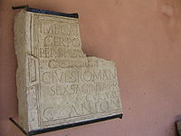
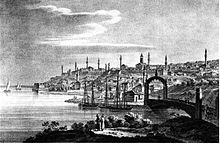
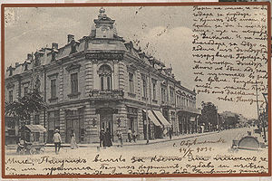

Античност и средновековие
Имена
 Русе е град с 20-вековна история, която започва с изграждането на тракийско селище, наследник на което през римско време става крепостта Сексагинта Приста (на латински Sexaginta Prista, "пристанище на 60 кораба"). Тя е военно средище и флотска станция. Възниква по време на управлението на император Веспасиан, 69-70 г., като част от укрепителната система по северната дунавска граница на римската провинция Мизия, създадена 15 години след Хр. Крепостта била разположена на главния път от Сингидиум (днешен Белград) до делтата на Дунава. Тук през различно време станували кохорти от по 600 души и други военни единици.
Значението на Сексагинта Приста като твърдина и станция на дунавската флотилия било важно, защото превозът на продоволствия и оръжие се осъществявал по реката. Крепостта по-късно бива унищожена от нападенията на авари и славяни през VI век. През периода на Първото българско царство (IX-XI век) и Второто българско царство (XII-XIV век) на дунавския бряг, близо до руините на Приста, съществува укрепено селище с името Русе, по-късно Гюргево (наричано е още Голямо Йоргово). То се утвърждава като значимо средище за търговия с отвъддунавските земи. Завзето е от османските турци през 1388 г.
Под османска власт и Българско възраждане
 По време на похода от 1596-1598 г. влашкият войвода Михай Витязул Храбри съсипва крепостта Червен (30 км южно от Русе), което дава начало на развитието на Русе. През османското владичество градът е преименуван на Русчук. През XVIII век той е превърнат в голяма крепост, част от укрепения четириъгълник Русе – Шумен – Варна – Силистра. През 1811 г. в околностите на града се провеждат сражения от Руско-турската война 1806-1812 г.. На 22 юли 1810 г., след 10-дневно бомбардиране, е предприет щурм на града, който бил отбит и струвал на руската армия огромни загуби. Опитът на турците да деблокират Русчук (Русе) завършил на 26 август с поражение за тях в сражението при с. Батин, след което руските отряди заели Свищов, Бяла, Търново и Оршова. На 15 септември се предали Русчук (Русе) и Гюргево.
През Кримската война на 25 юни (7 юли) войските на Омер паша съсредоточени при Русчук (над 30 хил.) форсирали Дунава и след бой с малочисления руски отряд, упорито отбраняващ остров Рамадан на Дунав, овладели Гюргево, със загуби до 5 хил. човека.
Русе израства като един от най-големите дунавски османски градове и след Кримската война от XIX век е избран за административно средище на Дунавския вилает на Османската империя, простиращ се от Варна и Тулча до София и Ниш. В Дунавския вилает, който се свързва с дейността на Мидхат паша, се извършват редица нововъведения, целящи осъвременяването на Османската империя. Водоснабдяването на Русе е едно от тях.
- През 1864 г. е открита първата съвременна печатница в българските земи.
- През 1865 г. за първи път в България улиците получават имена.
- През 1866 г. е завършена първата телеграфна линия у нас между Варна и Русе, минаваща през Шумен.
- През 1867 г. е завършена първата жп линия (Русе-Варна).
- През 1870 г. в Русе се провежда първото в страната изложение на местната индустрия и земеделското производство и започва да функционира първата Фабрика за алкохолни напитки на Г. Петру.
- През 1876 г. започва работа първата парна бояджийска фабрика "Пенков-Павлов".
След Освобождението
Съвременната история на Русе започва на 20 февруари 1878 г., когато руските войски на генерал Тотлебен влизат в града и слагат край на близо петвековния период на османско владичество. Като единствено официално име е установено паралелното на Русчук българско име Русе.
След Освобождението Русе е водещият български стопански и културен център и най-голям град в Княжеството. Седалище е на българското дунавско корабоплаване. Интензивното строителство променя архитектурния му облик и го доближава до средноевропейските градове. В периода 1878-1944 г. в Русе са създадени 416 промишлени предприятия – 164 са предприятията от областта на шивашката, текстилната, кожарската промишленост, 108 са фирмите от хранително-вкусовата промишленост, алкохолно производство, 41 фирми произвеждат химически изделия, 57 – металообработване, машиностроене, електропроизводство, 36 – дървообработване, 10 – керамика и огнеупорни материали. За няколко десетилетия градът е входната врата на Европа към България. Неслучайно в този период Русе е пионер в редица нововъведения:
- През 1878 г. Русе става първият град в България с градоустройствен план, изработен от руските военни инженери Ожио и Николай Копиткин;
- През 1879 г. в Русе е създадена Дунавската флотилия и първото земеделско училище "Образцов чифлик", днес — Институт по земеделие и семезнание "Образцов чифлик";
- През 1880 г. в Русе Иван Ведър полага началото на първата масонска ложа в княжество България – "Балканска звезда"
- През 1881 г. е построен първият метален кораб;
- През 1881 г. е създадена първата частна банка "Гирдап"
- През 1881 г. е учредено морско училище под името Морско машинно училище, което през 1900 г. е преместено във Варна;
- През 1881 г. е създадена първата фабрика за обработване на кожи на Валентин Месетич и Тасо Елич;
- През 1883 г. е построена първата метеорологична станция;
- През 1883 г. бележи още една новост — първата българска фабрика за сапун на Кръстю Йорданов;
- През 1884 г. е основано Първото аптекарско дружество в България.
- През 1885 г. в Русе се създава първото Българско техническо дружество;
Съединението и неговата защита
- През 1887 г. започва работа първата българска плетачна фабрика на Д. Люцканов;
- През 1890 г. е учредена Първа българска търговска камара в България;
- През 1890 г. в Русе е създадена първата българска фабрика за мебели на Соломон Алкалян;
- През 1891 г. е създадено първото застрахователно дружество "България";
- През 1896 г. е построен първият ръчно задвижван асансьор в България. Намирал се е в сградата "При Чикаго" (сега на ул. "Пирот" 5). В нея са се помещавали хотел, ресторант и модна къща за шапки. Задвижването е ставало ръчно от няколко здрави мъже. Асансьорът е стигал до покрива, където е била лятната градина на ресторанта.
- През 1897 г. се е състояла първата кинопрожекция в България, в заведението на Марин Чолаков в Русе. Собственик на кинематографическата машина и организатор на събитието бил Георги Кузмич. Той прожектирал филм, който показвал посрещането на цар Николай в Париж, един от парижките площади и движещ се влак. Месец по-късно, на 22 март, била организирана и първата прожекция в София.
В Русе са произвеждали първата фабрика за сода и лимонада "Лоза", първата българска фабрика за вратовръзки на С. И. Халасъ и първото столярно дружество "Първий Май". Тук е роден и първият дипломиран български пилот — Симеон Петров.
Според "Mеждународния алманах за България – 1898 г. – стр. 443" през 1898 г. в Русе е имало 4 печатници, 4 тютюневи фабрики, 2 фабрики за сода и лимонада. Най-големите предприятия са били "Братя Бъклови" – търговия на едро; Акционерно спестително дружество "Гирдап"; Българска търговска банка; Застрахователно дружество България; Химическата фабрика за мастила, восъци и лепила на Филип Симидов; Фабриката за кюнци и пещи – "Труд"; Фабриката за патрони на Йосиф Цанков, Паяков, Израелов и Сие; Парната дъскорезница на Хараламби Петков и Син; Столарската фабрика на Бр. Чернев; Железарската фабрика на Вилхелм Беман; Фабриката за картонени изделия и велосипеди на Нойвирт и Вебер; Фабриката за цигарени книги на Грацияни и Леви; Химическата фабрика за вакса и вазелин на Стефанов Томов и Сие; Фабриката за сапуни на В. Бъчеваров; Фабриката за сапуни на Бр. Дикрянъ и Меликсетян; Кожарската фабрика на Ценковъ, Павловъ и Сие; Фабриката за горни и долни ризи на И. Халачов; Фабриката за бонбони на Н. Кръстев; Пивоварната фабрика "Света Петка"; Фабриката за бира на наследниците на чешкия индустриалец Йозеф Хаберман;
Балкански и световни войни
- През 1906 г. в Русе заработва първата в страната фабрика "Експрес" на Аскерян и С-ие за велосипеди, грамофони и др. метални изделия;
- През 1908 г. заработва първата българска фабрика за железни кревати и мебели на Юрданов, Тонев и Казанджиев. Те поставят модата по таблите да се рисуват пейзажи.
- През 1927 г. в Русе е открита първата чорапена фабрика в България — Фазан
- През 1933 г. Братя Вешкови построяват рафинерия със свои средства и образуват "Първа българска петролна индустрия".
Между I-та и II-та световна война, след завземането на Южна Добруджа от Румъния, икономическото значение на града намалява. Закриват се почти всички консулства на чужди страни (днес в Русе съществуват само две консулства). Връщането на Южна Добруджа на България през септември 1940 г. създава условия за възстановяване на водещата му роля. Той е определен за областен център, оживява се стопанската дейност.
През комунизма
Нов тласък в развитието му става построяването на Дунав мост през 1954 г. и бързата индустриализация. Русе отново се въздига като голям икономически, транспортен, културен и просветен център. Развиват се машиностроенето (корабостроене, тежко машиностроене, производство на металорежещи машини, производство на селскостопански машини, електроника, приборостроене и др.), химическата (нефтопреработване, производство на бои) и леката промишленост. Изградено е голямо пристанище. Градът става университетски център. По време на преброяването през 1985 г. е отчетено население от над 186 000 души.
В началото на 80-те години Русе навлиза в труден период от своята история. В Гюргево е построен химическият завод "Верахим", който обгазява града в продължение на почти десет години и се отразява пагубно върху неговото развитие. Населението започва да намалява, като само между 1985 и 1992 г. Русе е напуснат от 15 хиляди души. След 1989 г. румънският завод работи с минимална част от капацитета си и обгазяванията постепенно спират.
Развитие в посткомунизма
През 90-те години цялостната икономическа криза в България се отразява и върху развитието на Русе. Повечето големи предприятия в града западат, а безработицата се увеличава. Това води до нови изселнически вълни. След 2000-ната година градът постепенно започва да възвръща предишните си водещи позиции.
През 2011 г централната градска част беше обновена чрез европейски проект на стойност 10 млн. лв. В експлоатация бе пуснат първият сух фонтан в България. В процес на строеж са спортната зала и първият частен музей в България. Вече работи и пречиствателната станция за отпадъчни води в Русе, част от интегрирания воден проект на крайдунавския град, финансиран по програмата ИСПА на ЕС на обща стойност от 57 млн. евро.
През 2013 г бе одобрен проект за благоустройство на старата централна градска част, който ще я свърже с "новия" център, намиращ се на площад Свобода. Планира се поставянето на паметник на родения в Русе световноизвестен писател-нобелист Елиас Канети. Работи се по проект за Интегрирана система за градски транспорт на стойност 29 млн лв.
Русе е кандидат за Европейска столица на културата 2019